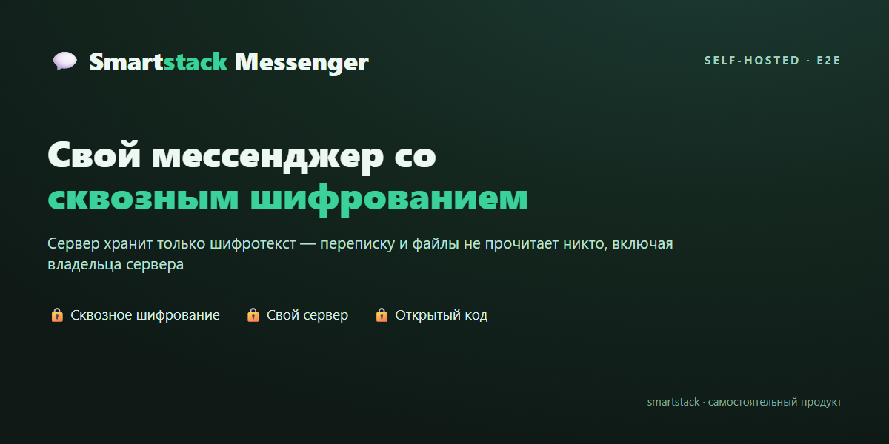

Мессенджер с полным шифрованием переписки, который вы держите у себя — на своём сервере или компьютере. Даже владелец сервера не может прочитать ваши сообщения: переписку и файлы не видит никто. Работает отдельно от SmartStock — это самостоятельный продукт.
Открытый код под лицензией MIT — шифрование можно проверить, а не принять на веру. Установка одной командой.

Полностью автономный мессенджер: сервер и два клиента. Не зависит от складской программы — можно поставить только его.
Простой сервер на вашем компьютере или VPS. Хранит аккаунты, диалоги и переписку. Видит только зашифрованные сообщения — ни текста, ни вложений прочитать нельзя. Технические подробности →
Один HTML-файл — открываете в браузере, ничего не нужно устанавливать. Укажите адрес своего сервера и пользуйтесь.
Отдельная программа для Windows. Полностью совместима с веб-версией — переписка читается в обеих.
Один на один и группы. В группах сообщение шифруется отдельно для каждого участника — нет единого ключа, перехватив который, можно было бы прочитать всю переписку.
Файлы шифруются прямо на вашем устройстве — на сервер уходит только зашифрованный файл, а ключ к нему остаётся у вас. Сервер не может его открыть.
У каждого пользователя — свой секретный ключ. Он хранится только у вас (в браузере или в файле на компьютере) и никогда не уходит на сервер.
Сервер не видит, кто автор сообщения — это знает только получатель. Скрываются и другие следы переписки: реакции и файлы, без отметок «прочитано», IP-адреса не записываются.
Сверьте короткий код собеседника по другому каналу (например, лично или по телефону) — и любая попытка сервера подменить его будет сразу заметна.
Контакты находятся по короткому идентификатору или имени. Регистрация — по ключу, который выдаёт администратор инстанса.
Администратор задаёт, сколько аккаунтов на сервере, и видит оценку нагрузки. Удобно для команды или клуба по интересам.
Сервер ставится одной командой — всё настраивается автоматически. Подойдёт VPS или обычный компьютер в офисе.
Используются современные, проверенные методы шифрования; веб- и десктоп-версии полностью совместимы между собой — сообщение, отправленное из браузера, читается в программе на компьютере, и наоборот.
Сильная сторона — конфиденциальность содержимого: переписку и файлы нельзя прочитать на сервере. Но честно обозначим и границы — настоящая приватность строится на том, что проверяемо, а не на лозунгах.
То есть это полное шифрование содержимого переписки, а не анонимность. Чем это сильно: вы хостите сервер сами, данные не уходят третьим лицам, а шифрование можно проверить по открытому коду. Внешнего аудита безопасности пока не проводилось — код открыт именно для того, чтобы его можно было изучить и проверить.
Внутренний чат, который не висит в чужом облаке: переписка и документы — на вашем сервере, под вашим контролем.
Готовая основа защищённого мессенджера под лицензией MIT: сервер, веб- и десктоп-клиент, общий формат шифрования. Берите и дорабатывайте под себя.
Содержимое чатов недоступно даже владельцу сервера. Вы сами решаете, где он стоит и кто имеет к нему доступ.